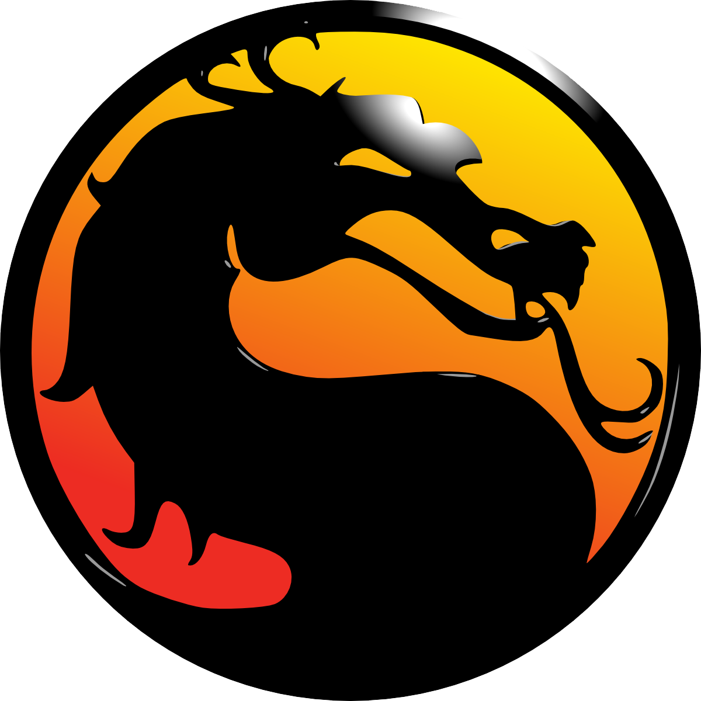

Mortal Kombat 3 Ultimate
Sega Mega Drive
✕
Откройте игру через раздел «Развлечения».
Start
Start · Игрок 2
🔊
⏸ Пауза
⛶ Во весь экран
Джойстик + 6 кнопок
Стрелки + 6 кнопок
↑
←
↓
→
X
Y
Z
A
B
C
⬅️ Назад
🔚 Главное меню